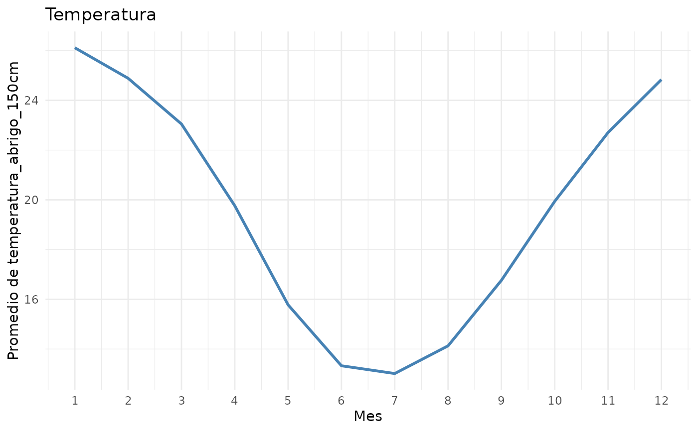
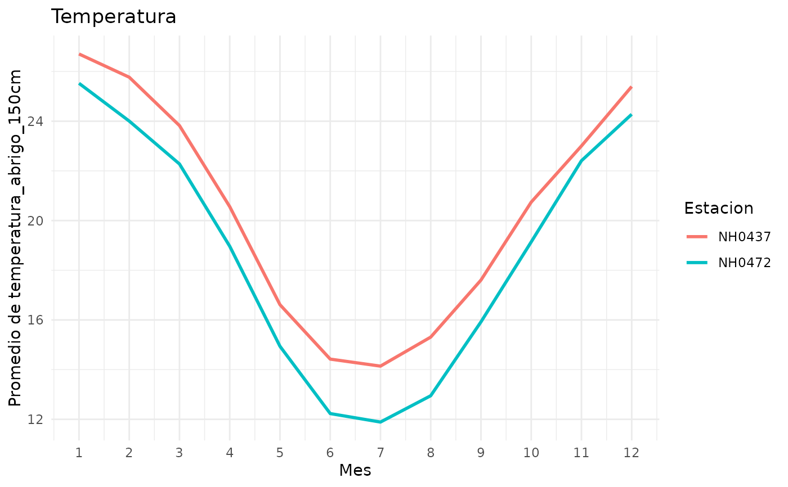
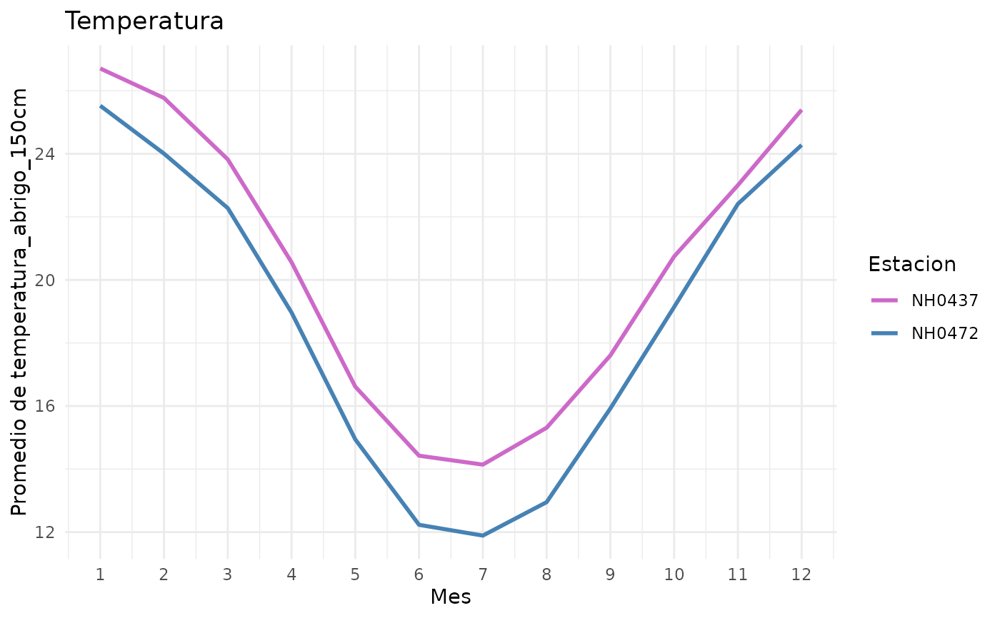
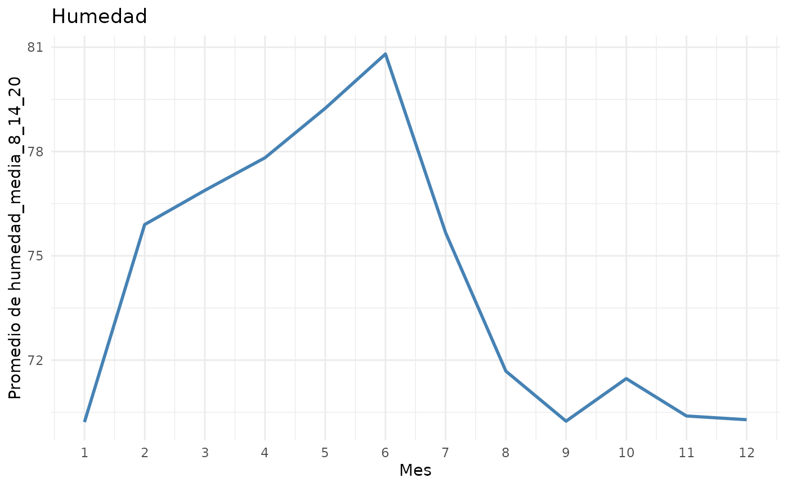

Calcula el promedio de una variable numerica para cada mes del anio y lo representa en un grafico de lineas, lo que permite observar su variacion a lo largo del anio. El grafico se puede hacer con todos los datos juntos o con una linea para cada estacion.
Usage
graf_prom_mensual(
datos,
variable = "temperatura_abrigo_150cm",
por_estacion = FALSE,
colores = NULL,
titulo = "Temperatura"
)Arguments
- datos
Un data frame con una columna
fechay al menos una columna numerica. La columnafechapuede ser de tipo fecha (Date) o texto en el orden anio-mes-dia, por ejemplo"1961-07-01". Sipor_estacion = TRUE, tambien tiene que tener la columnaid, que identifica a cada estacion.- variable
Nombre de la columna numerica a promediar, como cadena de caracteres. Por defecto,
"temperatura_abrigo_150cm".- por_estacion
TRUEoFALSE. Si esTRUE, se dibuja una linea para cada estacion. Si esFALSE(por defecto), se dibuja una sola linea con todos los datos juntos, aunque haya mas de una estacion.- colores
Colores de las lineas, como cadena de caracteres. Si
por_estacion = FALSE, un solo color. Sipor_estacion = TRUE, un color por estacion, en el orden alfabetico de losid. Por defecto (NULL), se usa"steelblue"para una sola linea y los colores automaticos de ggplot2 para varias.- titulo
Titulo del grafico, como cadena de caracteres. Por defecto,
"Temperatura". Si se grafica otra variable, conviene cambiarlo.
Value
Un objeto ggplot con el promedio mensual de variable.
Se le pueden agregar capas de ggplot2 con +.
Details
El promedio se calcula agrupando las observaciones por mes (1 a 12). Si los datos abarcan varios anios, el promedio de cada mes combina todos los anios: por ejemplo, el valor de enero es el promedio de todos los eneros disponibles.
Si por_estacion = FALSE, la funcion no distingue entre estaciones
meteorologicas: si datos contiene observaciones de mas de una
estacion, se promedian todas juntas.
Si la columna fecha es texto, se convierte a fecha dentro de la
funcion (el data frame original no se modifica).
Los valores faltantes (NA) de variable se ignoran al calcular
los promedios. Si hay alguno, la funcion informa en la consola
cuantos se ignoraron.
Examples
# temperatura de abrigo a 150 cm (variable por defecto), todos los datos juntos
graf_prom_mensual(datos_estaciones)
#> Valores faltantes (NA) ignorados en temperatura_abrigo_150cm: 1.

# una linea para cada estacion
graf_prom_mensual(datos_estaciones, por_estacion = TRUE)
#> Valores faltantes (NA) ignorados en temperatura_abrigo_150cm: 1.

# eligiendo un color para cada estacion
graf_prom_mensual(datos_estaciones, por_estacion = TRUE,
colores = c("orchid3", "steelblue"))
#> Valores faltantes (NA) ignorados en temperatura_abrigo_150cm: 1.

# otra variable, con su propio titulo
graf_prom_mensual(datos_estaciones, variable = "humedad_media_8_14_20",
titulo = "Humedad")
#> Valores faltantes (NA) ignorados en humedad_media_8_14_20: 4.
